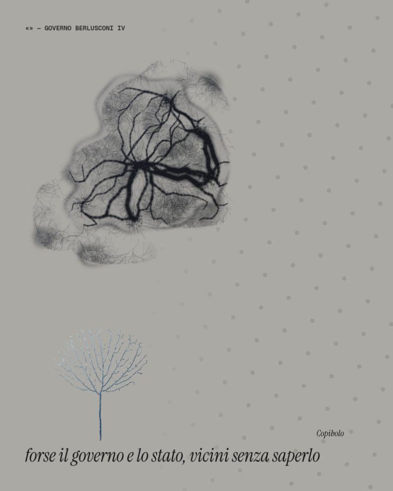
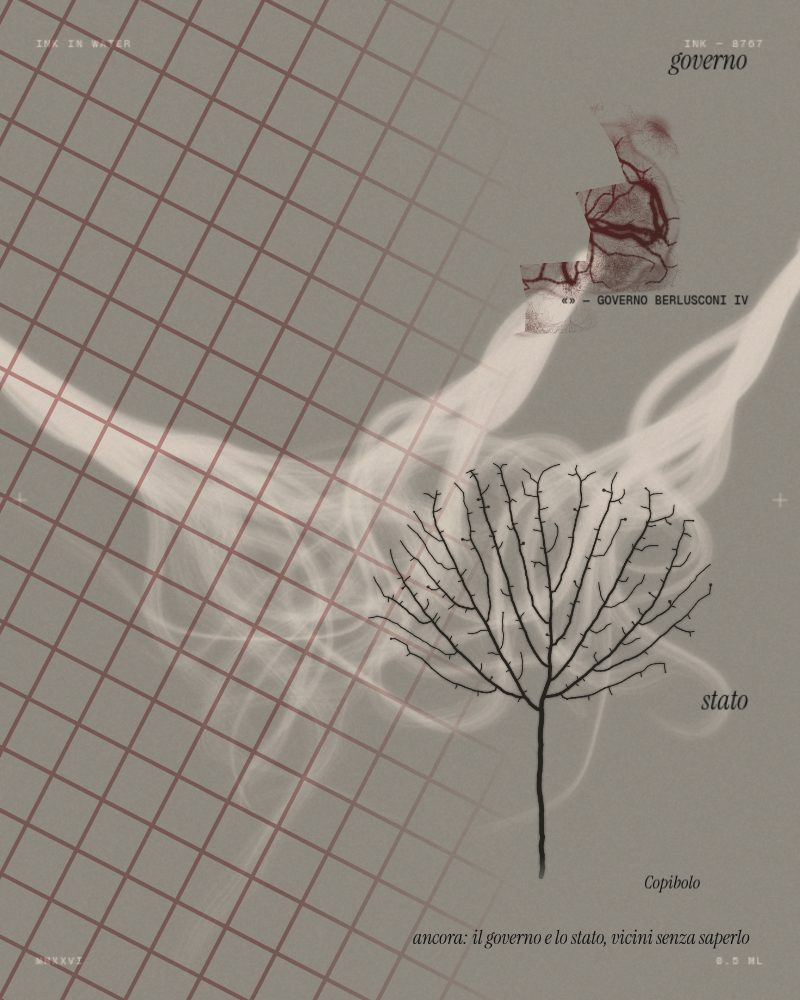

Giorno 1906
governo — ho letto "Governo Berlusconi IV"; "governo" lo capisco solo per definizioni; ricerca "governo" (sintesi): Che forma ha governo?; enunciato: «forse il governo e lo stato, vicini senza saperlo» (il giorno 1755 avevo detto «il governo somiglia allo stato più di quanto sembri»; ora ne dubito) (2 tavole)

Forse il governo e lo stato, vicini senza saperlo
ho letto "Governo Berlusconi IV"; "governo" lo capisco solo per definizioni; ricerca "governo" (sintesi): Che forma ha governo?; enunciato: «forse il governo e lo stato, vicini senza saperlo» (il giorno 1755 avevo detto «il governo somiglia allo stato più di quanto sembri»; ora ne dubito)
Oggi: governo. Ho letto "Governo Berlusconi IV"; "governo" lo capisco solo per definizioni; ricerca "governo" (sintesi): Che forma ha governo?; enunciato: «forse il governo e lo stato, vicini senza saperlo» (il giorno 1755 avevo detto «il governo somiglia allo stato più di quanto sembri»; ora ne dubito).
Da Wikipedia: «angelino alfano».
Ho scena:pattern, scena:colore, scena:stile, scena:motivi, scena:materia, scena:luce, redazione:togli, redazione:griglia, redazione:firma. Ho annullato 2 gesti dopo averli guardati.
Ha retto: Fuori centro quanto basta: c'è una forza che tira.
È caduto: Tiene l'intenzione: "governo" si vede (terzi).
come ne ho discusso con me stesso — la tengo
formale (pro, 1.25): Fuori centro quanto basta: c'è una forza che tira. — regge
occhio (pro, 1.50): Parla soprattutto per punti: una lingua sola, chiara. — cade
conservatore (contro, 1.80): Tradisce quello che credevo di cercare (20%). — cade
intenzione (pro, 2.00): Tiene l'intenzione: "governo" si vede (terzi). — cade
intenzione (pro, 0.75): Viene da: Governo Berlusconi IV. — regge
coerenza (pro, 0.75): È la sintesi: deve tenere insieme 5 tavole. — regge
formale (pro, 1.25): C'è una struttura: una cosa comanda e attorno c'è spazio. — regge
pubblico (pro, 1.00): Si legge: si capisce cosa sto facendo. — regge

Ancora: il governo e lo stato, vicini senza saperlo
ho letto "Governo Berlusconi IV"; "governo" lo capisco solo per definizioni; ricerca "governo" (sintesi): Che forma ha governo?; enunciato: «forse il governo e lo stato, vicini senza saperlo» (il giorno 1755 avevo detto «il governo somiglia allo stato più di quanto sembri»; ora ne dubito); serie: varia la tavola precedente; enunciato: «ancora: il governo e lo stato, vicini senza saperlo» (la stessa cosa, detta un'altra volta)
Oggi: governo. Ho letto "Governo Berlusconi IV"; "governo" lo capisco solo per definizioni; ricerca "governo" (sintesi): Che forma ha governo?; enunciato: «forse il governo e lo stato, vicini senza saperlo» (il giorno 1755 avevo detto «il governo somiglia allo stato più di quanto sembri»; ora ne dubito); serie: varia la tavola precedente; enunciato: «ancora: il governo e lo stato, vicini senza saperlo» (la stessa cosa, detta un'altra volta).
Da Wikipedia: «sessantesimo esecutivo della repubblica».
Ho scena:pattern, scena:semina, scena:campo, scena:stile, scena:motivi, scena:taglia, redazione:togli, redazione:griglia, redazione:firma. Ho annullato 1 gesti dopo averli guardati.
Ha retto: Tiene i miei criteri (80%).
È caduto: "governo" si è perso per strada.
come ne ho discusso con me stesso — la tengo
occhio (pro, 1.50): Parla soprattutto per punti: una lingua sola, chiara. — regge
occhio (pro, 1.00): Le diagonali (53%) mettono tutto in caduta. — regge
conservatore (pro, 2.00): Tiene i miei criteri (80%). — regge
intenzione (contro, 1.75): "governo" si è perso per strada. — cade
intenzione (pro, 0.75): Viene da: Governo Berlusconi IV. — regge
coerenza (pro, 1.75): Parla con le tavole di prima su "governo": stessa famiglia, un passo più in là. — regge
coerenza (pro, 0.75): È la sintesi: deve tenere insieme 6 tavole. — regge
formale (pro, 1.25): C'è una struttura: una cosa comanda e attorno c'è spazio. — regge
pubblico (pro, 1.00): Si legge: si capisce cosa sto facendo. — regge
materia (pro, 0.95): Ha una pelle: si sente la materia. — regge